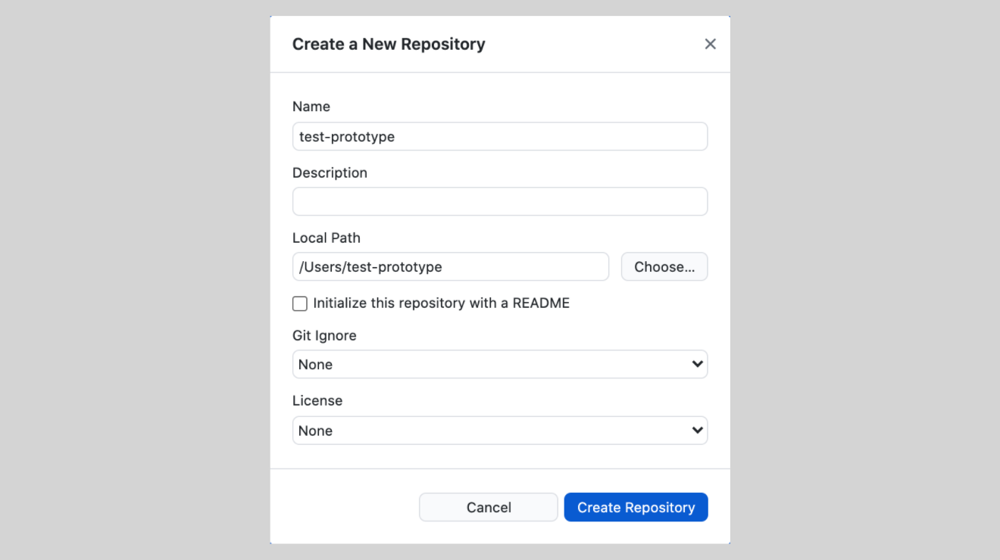

{% extends "layout.html" %}

{% block pageTitle %}
  GOV.UK Prototype Kit
{% endblock %}

{% block content %}

  <div class="govuk-grid-row">
    <div class="govuk-grid-column-two-thirds">
      <h1 class="govuk-heading-xl">
        Store your prototype in Git 
      </h1>
      <div class="govuk-form-group">
        
    </div>
      <p>
        If you're using GitHub Desktop:
      </p>

      <ol class="govuk-list govuk-list--number">
        <li>
          Select <strong>File</strong> and <strong>New Repository</strong>.
        </li>
        <li>
          Give your prototype a <strong>name</strong>.
        </li>
        <li>
          Choose the <strong>local path</strong> to your prototype folder. 
        </li>
        <li>
          Select <strong>Create Repository<strong>.
        </li>
      </ol>

    </div>
  </div>

{% endblock %}
